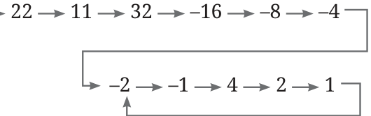
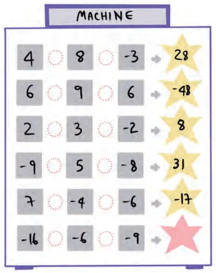
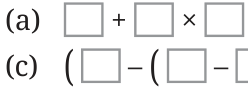

- Find the values of the following expressions:
- \((-5) \times (18 + (-3))\)
- \((-7) \times 4 \times (-1)\)
- \((-2) \times (-1) \times (-5) \times (-3)\)
- Find the values of the following expressions:
- \((-27) \div 9\)
- \(84 \div (-4)\)
- \((-56) \div (-2)\)
- Find the integer whose product with \((-1)\) is:
- 27
- \(-31\)
- \(-1\)
- 1
- 0
- If \(47 - 56 + 14 - 8 + 2 - 8 + 5 = -4\), then find the value of \(-47 + 56 - 14 + 8 - 2 + 8 - 5\) without calculating the full expression.
- Do you remember the Collatz Conjecture from last year? Try a modified version with integers. The rule is — start with any number; if the number is even, take half of it; if the number is odd, multiply it by \(-3\) and add 1; repeat. An example sequence is shown below.

Try this with different starting numbers: \((-21)\), \((-6)\), and so on. Describe the patterns you observe.
- In a test, \((+4)\) marks are given for every correct answer and \((-2)\) marks are given for every incorrect answer.
- Anita answered all the questions in the test. She scored 40 marks even though 15 of her answers were correct. How many of her answers were incorrect? How many questions are in the test?
- Anil scored \((-10)\) marks even though he had 5 correct answers. How many of his answers were incorrect? Did he leave any questions unanswered?
- Pick the pattern — find the operations done by the machine shown below.

- Imagine you're in a place where the temperature drops by 5°C each hour. If the temperature is currently at 8°C, write an expression which denotes the temperature after 4 hours.
- Find 3 consecutive numbers with a product of (a) \(-6\), (b) 120.
- An alien society uses a peculiar currency called 'pibs' with just two denominations of coins — a +13 pibs coin and a \(-9\) pibs coin. You have several of these coins. Is it possible to purchase an item that costs +85 pibs?
Yes, we can use 10 coins of +13 pibs and 5 coins of \(-9\) pibs to make a total of +85. Using the two denominations, try to get the following totals:
- +20
- +40
- \(-50\)
- +8
- +10
- \(-2\)
- +1 [Hint: Writing down a few multiples of 13 and 9 can help.]
- Find the values of:
- \((32 \times (-18)) \div ((-36))\)
- \((32) \div ((-36) \times (-18))\)
- \((25 \times (-12)) \div ((45) \times (-27))\)
- \((280 \times (-7)) \div ((-8) \times (-35))\)
- Arrange the expressions given below in increasing order.
- \((-348) + (-1064)\)
- \((-348) - (-1064)\)
- \(348 - (-1064)\)
- \((-348) \times (-1064)\)
- \(348 \times (-1064)\)
- \(348 \times 964\)
- Given that \((-548) \times 972 = -532656\), write the values of:
- \((-547) \times 972\)
- \((-548) \times 971\)
- \((-547) \times 971\)
- Given that \(207 \times (-33 + 7) = -5382\), write the value of \(-207 \times (33 - 7)\) = ____.
- Use the numbers 3, \(-2\), 5, \(-6\) exactly once and the operations '+', '−', and '\(\times\)' exactly once and brackets as necessary to write an expression such that —
- the result is the maximum possible
- the result is the minimum possible
- Fill in the blanks in at least 5 different ways with integers:

- ____ + ____ \(\times\) ____ \(= -36\)
- (____ \(-\) ____) \(\times\) ____ \(= 12\)
- (____ \(-\) (____ \(-\) ____)) \(= -1\)